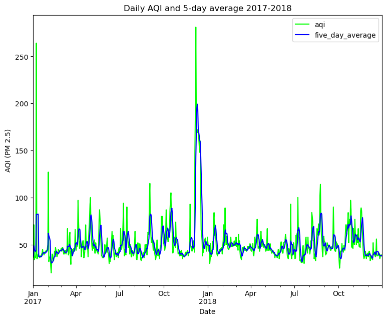

There are two primary goals of this data analysis and visualization. 1. Use county-level AQI data to show the air quality in Santa Barbara County from 2017-2018, highlighting the Thomas Fire, which occurred in December, 2017. 2. Use Landsat and a shapefile of fire perimeters in California to create a false color image displaying the fire scar from the 2017 Thomas Fire
Highlights of analysis
Fetch vector data from an online repository (AQI data)
Clean & update AQI data
Time series analysis & visualization
Read in xarray.Dataset for raster data
Read in pre-processed shapefile
Clean & update raster data
Clean & update shapefile data, extract polygon(s) of interest
Create False Image visualization of raster data
Visualize raster data with added fire border shapefile layer
More specifically, I’ll be importing county-level AQI data for 2017 and 2018
Landsat Collection 2 Level-2 data from Landsat 8
The second is a simplified collection of bands (red, green, blue, near-infrared and shortwave infrared) from the Landsat Collection 2 Level-2 atmosperically corrected surface reflectance data, collected by the Landsat 8 satellite
This data that was accessed and pre-processed in Microsoft’s Planetary Computer to remove data outside land and coarsen the spatial resolution (Landsat Collection in MPC) by Professor Carmen Galaz-García (@carmengg on GitHub)
Landsat Data: https://planetarycomputer.microsoft.com/dataset/landsat-c2-l2, pre-processed on Microsoft’s Planetary Computer by Dr. Carmen Galaz-García (Accessed November, 2023). This file will by in a data folder in my github repo for this project.
# before we begin our analysis, let's load in the relevant libraries, packages, and modules:# importing libraries with standard abbreviations# basic librariesimport os # like here() in Rimport numpy as npimport pandas as pd# for spatial/raster data etc. import xarray as xrimport rioxarray as rioxrimport geopandas as gpd# for plotting import matplotlib.pyplot as pltimport matplotlib.patches as mpatches # for creating legendsimport matplotlib.lines as mlines # for making our customized marker in the legendfrom matplotlib.lines import Line2D # also for this custom marker from matplotlib.markers import MarkerStyle # also for custom markersfrom shapely.geometry import Point from shapely.geometry import box # for making our bounding box/cropping (optional)from rasterio.features import rasterize # for rasterizing polygonspd.set_option('display.max_columns', None) # setting custom full output options for data exploration (optional)
Importing Data
Code
#======= AQI Data for 2017-2018 =======## reading in data using the download links in EPA's AQS data (cited in the About section)# reading in 2017 county-level AQI data aqi_17 = pd.read_csv('https://aqs.epa.gov/aqsweb/airdata/daily_aqi_by_county_2017.zip')# reading in 2018 county-level AQI dataaqi_18 = pd.read_csv('https://aqs.epa.gov/aqsweb/airdata/daily_aqi_by_county_2018.zip')#=====(pre-processed) Landsat Data =====## setting file path for landsat data (NetCDF file),# using os() for multi-operating system compatibilitylandsat_fp = os.path.join(os.getcwd(), 'data', 'landsat8-2018-01-26-sb-simplified.nc')# importing the landsat data it with rioxarraylandsat = rioxr.open_rasterio(landsat_fp)# ======= California Fire Borders ======= ## setting file path for CA Fire Perimeters data, # using os() for multi-operating system compatibilityca_fp = os.path.join(os.getcwd(), 'data', 'California_Fire_Perimeters_2017', 'California_Fire_Perimeters_2017.shp')# importing the CA Fire Perimeters 2017 shapefile from our filepath using geopandasca_fires = gpd.read_file(ca_fp)
Santa Barbara County AQI Data
Data Cleaning & Updates
Code
# currently, our 2017 and 2018 data are separate... Let's start by concatenating them:# concatenating our two years of data into one dataframeaqi = pd.concat([aqi_17, aqi_18])# ====== Cleaning column names ====== ## cleaning up the column names to be lower_snake_caseaqi.columns = aqi.columns.str.lower().str.replace(' ','_')# ====== Filter to Santa Barbara County ====== ## selecting rows where county_name is equal to "Santa Barbara"aqi_sb = aqi[aqi.county_name =="Santa Barbara"]# ====== Data sub-selection ======= ## using .loc to select the columns after county_codeaqi_sb = aqi_sb.loc[:,'date':'number_of_sites_reporting']# ====== Updating datatype of "date" column, set as index ====== ## using .loc to select the columns after county_codeaqi_sb = aqi_sb.loc[:,'date':'number_of_sites_reporting']# updating index to the date columnaqi_sb = aqi_sb.set_index('date')# Setting `date` to be our new index is more intuitive, and will also help# us plot the AQI over time in our analysis later on
Now that our data is cleaned and updated, we can move on to our analysis and visualization.
AQI Data Analysis & Visualization
We could just go straight to plotting our AQI data over time in Santa Barbara County, but it would be interesting to also show a 5-day rolling average plotted on top of it.
In order to make our data visualization more legible, we can compute a rolling average of our AQI over time and add that as a column for our analysis.
rolling() is a method for pandas.series that provides rolling window calculations
the parameter '5D' indicates we want the window to be 5 days
This is a lazy method (think groupby), so we need to specify what we want to calculate over each window
we’ll also use the aggregator function mean()
this indicates that we want the mean over each window
Code
# computing a 5-day rolling average of AQI # and inserting it as a new column at the end of the dataframeaqi_sb.insert(loc =5, column ="five_day_average", value = aqi_sb.aqi.rolling('5D').mean())
Great! Now we can make a line plot showing both the daily AQI and the 5-day average (5-day average on top of the AQI), using matplotlib
Code
# plotting our daily aqi and five day rolling average aqi on one plotfig, ax = plt.subplots(figsize=(9,7))aqi_sb.plot(ax=ax, y = ['aqi', 'five_day_average'], # selecting two variables for my y-axis to auto-generate a legend title ="Daily AQI and 5-day average 2017-2018", # updating title xlabel ='Date', # Updating x-axis label ylabel ="AQI (PM 2.5)", # updating y-axis label color = {'aqi': 'lime', # customizing colors'five_day_average':'blue' } )
<AxesSubplot:title={'center':'Daily AQI and 5-day average 2017-2018'}, xlabel='Date', ylabel='AQI (PM 2.5)'>

Note: we can see a huge spike at December, 2017. This is when the Thomas Fire occurred.
Landsat & fire border data
Geographical context of data
Because we’ll be removing the x- and y-axes later on when we make our map, it’s important to establish the geographical context of the data.
The data displayed in our final map are situated in Santa Barbara County, California (roughly 34.6099° N, 120.0665° W)
Landsat raster data cleaning & updates
Notes: - this data is an xarray.Dataset with 5 bands: red, green, blue, near-infrared, and shortwave infrared - we have an extra band layer, so we’ll want to drop that layer and associated coordinates before continuing with our analysis - the CRS of this raster data is EPSG:32611
Code
# ====== Drop unwanted band and associated coordinates ====== ## using squeeze() and .drop('band') in one line landsat = landsat.squeeze().drop('band')
CA fire border data cleaning & updates
Notes: - this data’s CRS is EPSG: 3857, which does not match our landsat CRS. We’ll need to reproject this data so that the CRS match before moving on to any analysis or plotting. - there is a column called FIRE_NAME, which will be useful when selecting the Thomas Fire later on - the column names are kind of a mess, so we’ll clean those up before moving any further..
Code
# ======== Data cleaning: column names ====== ## converting column names in the California Fire Borders lowercase ca_fires.columns = ca_fires.columns.str.lower()# ====== Reprojecting CRS ======== ## reprojecting: ca_fire crs to landsat crs (epsg:32611)ca_fire_satcrs = ca_fires.to_crs(landsat.rio.crs)
Now that we’re working with data in the same CRS, we can continue on to our analysis.
For this analysis, we’re only interested in the Thomas Fire, so we’ll clip the reprojected fire boundaries data to the bounds of our landsat data, and then filter for the Thomas Fire.
Code
# clipping: clip CA fires to the landsat bounds (can help with processing time)ca_fires = gpd.clip(ca_fire_satcrs, landsat.rio.bounds())# filtering: selecting Thomas Fire data by filtering fires data for fire_name == THOMASthomas_fire_border = ca_fires.loc[ca_fires.fire_name =="THOMAS"]# check to see if our fitlering was successfulprint(thomas_fire_border.fire_name.unique())thomas_fire_border.head()
['THOMAS']
index
objectid
year_
state
agency
unit_id
fire_name
inc_num
alarm_date
cont_date
cause
c_method
objective
gis_acres
comments
complex_na
complex_in
irwinid
fire_num
decades
shape_leng
shape_area
geometry
436
20274
41874
2017
CA
USF
VNC
THOMAS
00003583
2017-12-04
2018-01-12
9.0
7.0
1.0
281790.875
CONT_DATE based on Inciweb
None
None
None
None
2010
540531.887458
1.681106e+09
MULTIPOLYGON (((259241.263 3814482.913, 259193...
Now we’re ready to plot our raster data with our Thomas Fire border as a polygon layer on top.
Plotting Thomas Fire Scar
Here we’ll use matplotlib.pyplot to make our final map to show the Thomas Fire Burn Scar on our raster data of Santa Barbara - Ventura County (where the fire occurred)
we’ll be selectively plotting shortwave-infrared, near-infrared, and red bands to better highlight the change in land condition (decrease in vegetation, moisture levels, ground cover change)
Code
# initializing plot using matplotlibfig, ax = plt.subplots(figsize=(9, 7)) # setting figure size for output# plotting false color image (without creating any new variables)landsat[['swir22', # short-wave'nir08', # near-infrared# and red variables'red']].to_array().plot.imshow(robust=True, # using robust=True argument to deal with cloud RGB values squishing our plot ax=ax)# plotting Thomas fire perimeter using the selection of our ca fires subselection # filtered for fire_name == THOMASthomas_fire_border.plot(color="none", # empty fill color so we can clearly see the raster data edgecolor="red", # outline color of red for the Thomas Fire# because we're showing perimeter data ax=ax, # sharing same axes )# updating labels & legend using mpatches.Patchthomas_fire_border_patch = mpatches.Patch(color='red', # change color to red label='Thomas Fire') # update labelax.legend(handles = [thomas_fire_border_patch], frameon=False, # removing legend frame loc ="upper right", # setting location to upper right-hand side of the plot labelcolor ="white") # changing text color so you can see it on the black background# removing axesax.axis('off')# updating the titleplt.title("Thomas Fire Burn Scar in Santa Barbara County, CA (False Color Image)") # displaying plotplt.show()
Citation
BibTeX citation:
@online{ramji2023,
author = {Ramji, Anna},
title = {Thomas {Fire}},
date = {2023-12-13},
url = {https://a-ramji.github.io/blog/2023-12-13-thomas-fire/},
langid = {en}
}
![]()